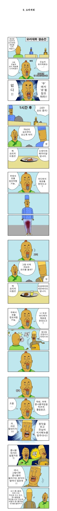
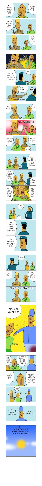

37 · 15 · 1 시간 전 · 원문


수집 당시 댓글 15개
매슬로 · 14 시간 전
순수재미 GOAT
미츠루기 · 14 시간 전
↳ 답글 · 나요즘형아가남자로보여 · 12 시간 전
개드립잼썽 · 1 시간 전
마약검사해봐야된다니까
세키로 · 1 시간 전
↳ 답글 · 합천노인회관장62세변칠갑 · 1 시간 전
이건 아반떼 등급이네요
볼트태클 · 1 시간 전
약이 아니면 나올 수 없는 정신세계
미국대장 · 1 시간 전
귀귀 작품은 현대 미술하고 똑같다
더스트향 · 1 시간 전
존나 유치하네
↳ 답글 · 개보지 · 1 시간 전
그냥 의식의 흐름으로 씨부려대는 거 너무 올려침
↳ 답글 · 선생님의마음씨 · 1 시간 전
애매하게 어중간하게 유치하면 별론데이렇게 쌈마이하게 제대로 유치하니까예술임
↳ 답글 · 미녀와야스 · 1 시간 전
ㅋㅋㅋ 나동
↳ 답글 · 사랑방창식이 · 54 분 전
흠 그렇군요 알겠습니다.
SeinundZeit · 1 시간 전
내가 뭘 읽은거지
스탈린 · 1 시간 전
시발 ㅋㅋㅋㅋㅋㅋㅋㅋㅋㅋㅋㅋㅋㅋㅋㅋㅋㅋ
순수재미 GOAT